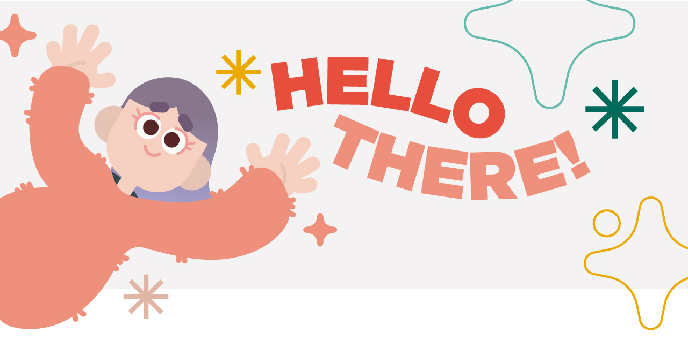

¿Qué aprendí en este curso?
Aprendí a comprender mejor la lógica y la estructura de la programación, a desarrollar mejor las bases para mi trabajo actual, el conocer otras oportunidades que esta área puede relacionarse con mi profesión, saber cómo funciona Javascript que nunca lo había manejado y conocer de lo que puedo ser capaz de crear.
Lo que he aprendido en tiempos de pandemia:
- Mejorar la LESCO
- Avanzar más en la universidad
- Cocinar pan de banano
Lo que me gustaría hacer o aprender:
- Clases de danza aérea
- Aprender cerámica
- Técnico de Interprete de LESCO